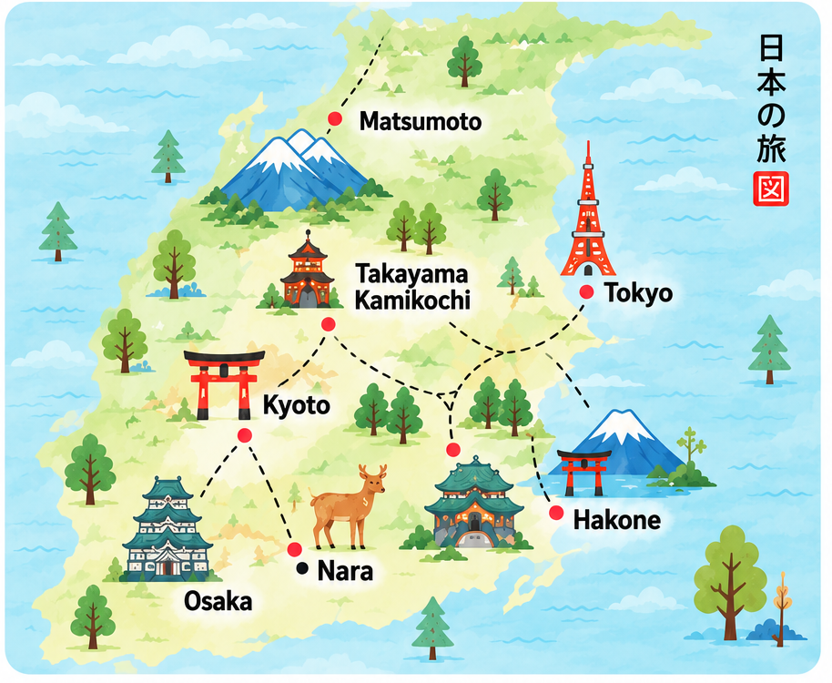

Shibuya Sky • Hakone Ropeway Fast Lane • Shinkansen Kyoto → Tokyo. נוסיף לכאן אחרי האישור.
Tokyo • Ginza flagship
Tokyo • MUJI Ginza
נעליים וקניות • נשמור את הסניף הנוח ביותר לפי היום.
16/9 • Ginza • Seiko Museum + SEIKO HOUSE / Dream Square.
Zoff Nishi-Ginza • בדיקת ראייה ומשקפיים.
Tokyo • Ginza
2.5–3 שעות; מצוין גם בלי גשם.
כבר משובץ ל-16/9 10:30 🔒.
אופציית גשם לשמור בבנק.
גשם קל: מוזיאון/onsen. גשם כבד: מורידים קצב.
נעדכן סמוך לטיסה מה באמת חם ושווה ליד המסלול.
ראמן, סושי, קינוחים ומנות עונתיות בלי סטייה מיותרת.
7-Eleven / FamilyMart / Lawson — דברים עונתיים, onigiri, קינוחים וקפה.
עצירת שירות בדרך למאטסומוטו — אוכל, שירותים ונוף.
חניה לפני השאטל ל-Kamikochi.
Hamamatsu SA / Okazaki SA / Tsuchiyama SA לפי עומסים ורעב.
כרגע הוא עונה מתוך המסלול המקומי באפליקציה. ברגע שתוסיפי קישור ישיר לשיחת ChatGPT שלנו, הכפתור כאן יוביל אליה.